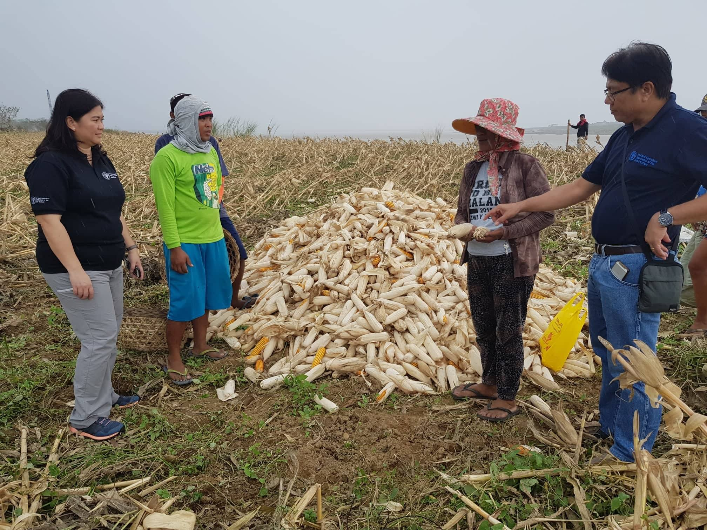

Typhoon Mangkhut impacts millions in Philippines' agricultural centre
The strongest typhoon in the Philippines since Typhoon Haiyan, Super Typhoon Mangkhut entered the Philippine area of responsibility (PAR) on 12 September, making landfall in Baggao in Cagayan province on 15 September. The typhoon’s diameter of nearly 900 km was destructive and triggered massive flooding and landslides as it moved westward across northern and central Luzon. Moving rapidly north-west, the typhoon exited PAR the same evening leaving northern and central Luzon with downed power lines, damage to homes, buildings, roads, and destroyed agricultural crops and fisheries.

Credit: UNICEF Philippines/J. Maitem Baggao, Cagayan (16 September 2018) A classroom damaged by strong winds at Remus Elementary School.
Millions affected already vulnerable before disaster
Prior to the typhoon, an impact analysis conducted by OCHA estimated that 3.4 million people were living in areas potentially affected by the storm. As of 6 October, more than 3 million people had been identified as affected, with over 14,000 people displaced. The National Disaster Risk Reduction and Management Council has confirmed over 70 deaths and more than 130 injured. Most of the casualties were due to landslides, especially in the Benguet region where at least 40 miners were buried in a small-scale mining community.
There were a number of pre-existing factors that likely left people especially vulnerable to the impact of the typhoon, including about 15 per cent of the population living below the poverty line, approximately eight per cent of the population relying on dug wells or natural sources for water and on pit latrines for sanitation, higher-than-average rates of malnutrition among children less than 5 years old, and vaccination rates of 60 per cent or lower, based on data shared by the Department of Health.
Homes and schools severely impacted
As of 5 October, over 210,000 homes had been reported as damaged, of which seven per cent (more than 14,000) are completely destroyed. School buildings were also flooded, destroying books, tables, chairs, school supplies and learning materials. A large number of government and public facilities, such as barangay halls, multipurpose centres, daycare buildings and barangay health stations also sustained damage. While all schools that were used as evacuation centres have since been stood down, there will be delays getting back to school over 1.9 million affected learners in Regions I, II, III and Cordillera Administrative Region (CAR). Many school buildings damaged during Typhoon Haima in 2016 have still not been repaired and are now totally damaged. Combined with the loss of livelihood of learner’s families, children from affected regions are at risk of dropping out of schools.
The Department of Education estimates the total cost to repair or rebuild education facilities alone in the four regions to be about PhP2 billion (US$37 million), not including equipment and supplies.
The humanitarian response
More than 150,000 persons were pre-emptively evacuated in Regions I, II, III, CAR (Cordillera Administrative Region), VI-B, V and NCR, and the Government continues to lead response efforts. Provincial and local authorities are assisting affected communities, assessing damages and providing relief to the displaced. On 25 September, President Rodrigo Duterte declared a state of calamity in Regions I, II, III and CAR.

Credit: PDRF Tuba, Benguet (17 September 2018) An assessment team crossing a river to interview affected families whose homes were destroyed by the typhoon.
As the number of displaced decline and people go home to repair their damaged houses, the transition to recovery will focus on getting vulnerable communities back on their feet. Livelihood support is one of the key priorities for assistance, with sources of income such as farming, fishery and mirco- and small enterprise being severely affected. On 4 October, the Department of Social Welfare and Development (DSWD) released guidelines for an emergency shelter programme to assist in the shelter reconstruction of typhoon survivors. Under the programme, DSWD will provide cash assistance of P30,000 ($554) to families with destroyed houses, and P10,000 ($184) to families whose homes sustained partial damage in Regions I, II, III, and CAR.
The Humanitarian Country Team, composed of in-country UN agencies, international and local non-governmental organizations and private sector partners, undertook a rapid needs assessment on 17-18 October. In coordination with the Office of Civil Defense regional offices, the teams went to 34 municipalities in five provinces, assessing the humanitarian impact and immediate needs of those affected by the typhoon.
The assessment identified priority needs in food security, agriculture and nutrition; shelter; water, sanitation and hygiene; health; and education. Those surveyed indicated a preference for cash assistance to repair their homes, purchase immediate needs such as water, and restart their livelihoods. The assessment also noted increased protection risks such as child or forced labour, trafficking and gender-based violence, all of which are heightened during a disaster. Following the assessment, members of the Humanitarian Country Team are supporting their government agency counterparts with relief items for health, WASH, and shelter, and continues to assist local authorities with augmenting agricultural and livelihood support. A Humanitarian Response and Resources Overview for Typhoon Mangkhut was also developed, outlining resources and priortisation of needs for the next three months.
The World Bank announced on 2 October the release of $496.5 million in funding from their Second Disaster Risk Management Development Policy Loan with a Catastrophe- Deferred Drawdown Option (Cat-DDO 2), which will assist the Philippine Government with recovery and rehabilitation efforts. Donors who have also pledged assistance include the ASEAN and the governments of Denmark, Spain (via AECID), United States (via USAID), the EU (via ECHO), New Zealand, Switzerland, Hong Kong Special Administrative Region and the Republic of Korea. To date, international contributions to the response total approximately $5.5 million.
As the number of displaced decline and people go home to repair their damaged houses, the transition to recovery will require assistance in getting vulnerable communities back on their feet.
Farmers and fisherfolk most affected as Typhoon Mangkhut batters Luzon just before harvest season
Article contribution from FAO
Farmers in northern Luzon look forward to September and October because it signals the harvest season of major staple crops. With the region being the biggest producer of corn and rice, harvest season means small-scale farmers will earn much-needed income to support their family’s needs.
Farmers and fisherfolk are among one of the most severely impacted by Typhoon Mangkhut, whose livelihoods are the most vulnerable to disasters. Farmers suffered from lost incomes from their missed harvest. Fisherfolk have also been affected, as they were not able to go out to sea to fish days before and after the typhoon, and fishponds in inland areas have been destroyed. The disruption in production will negatively impact the food supply not just for the region, but the nation for the following months.

As of 24 September, the Department of Agriculture (DA) estimates that over 570,000 farmers and fisherfolk have been directly affected by the typhoon. Overall damage and loss estimates have reached at least $492 million (P26.7 billion) on rice, corn, high-value crops, root crops, livestock/poultry, fisheries, and infrastructure, in at least 755,361 ha of agricultural areas. Rice incurred the largest share of losses amounting to $263 million (P14.5 billion), followed by corn at $150 million (P8 billion), high value crops at $63.5 million (P3.4 billion), and fisheries and livestock sectors at $885,000 (P48.1 million).
The typhoon also damaged key agricultural infrastructure. If not immediately addressed, this may lead to food insecurity and malnutrition, dependence on food aid and more financial difficulties as the affected farmers and fisherfolk try to recoup and recover from their losses, which may lead them to utilize credit and financing facilities that will further increase their debts.
“Farmers and fisherfolk need timely emergency agricultural assistance, including rice and corn seeds for immediate planting for the November/December planting season. Additional support for fertilizers, vegetable seeds, hand tools, equipment for planting and harvesting, fingerlings, feeds, fishing gear and equipment are also needed to resume income-generating activities and minimize prolonged dependence on food aid,” FAO Representative in the Philippines José Luis Fernandez said. “Early recovery assistance on rehabilitation of damaged small-scale agriculture infrastructure is also needed to enable productive capacities and facilitate linkage of the farmers to markets/agribusiness value chain.”
To assist the typhoon-affected farmers, the DA activated the Quick Response Fund amounting to $11.2 million (P600 million) for the provision of rice and corn seeds. DA will also make available crop insurance of $30 million (P1.6 billion) and emergency loans amounting to $16.4 million (P880 million) to support production.
UN support to food security and agriculture
The DA is coordinating with the Food and Agriculture Organization of the United Nations (FAO) on possible support to augment DA assistance. FAO is seeking to mobilise at least $9 million ($6 million for emergency response and $3 million for early recovery) initial funding to support government efforts in assisting farmers to reclaim their lost livelihoods, address food security and nutrition needs, and rehabilitate damaged small-scale agriculture infrastructure.
With a $60,000 contribution from the Government of the Kingdom of Belgium through the FAO-SFERA (Special Fund for Emergency and Rehabilitation Activities), FAO has deployed field staff and provided necessary support and technology (such as drones, satellite imagery and GIS mapping) in damage and needs assessments, standardization of damage estimation and reporting, development of targeted response plans, and other logistical needs. This builds on FAO’s work on building resilience of vulnerable farming and fishing communities and related government capacities to both natural and humaninduced disasters.
The New Zealand Government has also committed to provide $328,750 through FAO in response to the needs identified under the Food Security and Agriculture Cluster of the Humanitarian Country Team’s Humanitarian Response and Resources Overview. The contribution would augment the government’s provision of seeds through distribution of fertilizers and provision of technical assistance, including conduct of related capacitybuilding, to allow affected farmers to restore agricultural activities and build resilience.

Farmers and fisherfolk are one of the most severely impacted by Typhoon Mangkhut, whose livelihoods are the most vulnerable to disasters.
"Farmers and fisherfolk need timely emergency agricultural assistance, including rice and corn seeds for immediate planting for the November/December planting season." - Jose Luis Fernandez, FAO Representative in the Philippines
Back to School and Stay in School Initiatives for children affected by Marawi crisis
Nearly a year after the Marawi conflict ended, over 100,000 school aged children are either not yet back to school or are at risk of dropping out of school due to distances from their schools and unaffordable cost of schooling. Lanao del Sur province was already the poorest in the country before Marawi emergency with 66 per cent of families living below the poverty line of $1 per day.
To date, there are some 21,000 learners that have been counted as enrolled in various public elementary and secondary schools in Marawi City, Lanao del Sur and Lanao Del Norte. It means that many children are either not in school or not known to be back to school. For example, of the original 69 public schools in Marawi City, 20 were destroyed by the armed conflict. Displaced learners are scattered throughout municipalities in Lanao del Sur and Lanao del Norte. Latest displacement data (DSWD, 22 August 2018) shows that there are over 8,900 displaced families in the two provinces with approximately 17,892 school aged children. However, the School Division of Lanao Sur 1 have counted only 1,663 enrolled children and only 2,608 enrolled in Lanao Norte. This means that many displaced children are not enrolled and are not accessing education. Many of the children have never enrolled in school at all.

DepEd ARMM in cooperation with its development partners, launched a “Back to School and Stay in School Initiative” (BTS/SiS) mid-2018. This initiative is an approach to ensure that school-aged children affected by the Marawi conflict are able to go back to school and stay in school. In addition, it is expected that the momentum created by the initiative may encourage families to send their children to school who might otherwise have kept them home, and also for youth who have dropped out of school to avail of alternative learning programmes where they are available.
The BTS/SiS initiative is comprised of eight components for a total cost of over $2 million. Components include the tracking of learners through household visits to ensure their whereabouts, general communications for families and children and provision of learner and teacher kits for schools to reduce the costs to families of sending children to school.
The United Nations Children's Fund (UNICEF) has committed technical support to DepEd ARMM for their coordination of the initiative, has provided technical and financially support for ‘learner tracking’ using a new app-based tool so that data on children back to school can easily and quickly be uploaded for analysis, and is procuring school learner materials for some 257 schools in Lanao del Sur Division 1. Several other organizations have committed to provide school supplies for schools in the four School Divisions taking part in the initiative.
The BTS/SiS initiative is now seeking funding for school materials for other schools in Divisions 2 and 3 as well as partnerships for school-based feeding. Specific details may be obtained from DepED ARMM or UNICEF.
To date, there are some 21,000 learners that have been counted as enrolled in various public elementary and secondary schools in Marawi City, Lanao del Sur and Lanao Del Norte.
Philippines strengthens commitment to disaster preparedness at INSARAG forum
The Philippines took centre stage at the annual meeting of the Asia-Pacific regional chapter of the International Search and Rescue Advisory Group (INSARAG), held on 30 and 31 August in Tokyo. The meeting, convened by Japan as the current chair of the Asia-Pacific group, brought together 74 senior representatives and officials from national disaster management agencies from 21 countries and organisations, as well as representatives from other regional groups.
Founded in 1991, INSARAG facilitates coordination among international urban search and rescue teams who make themselves available for deployment to countries following major earthquakes. As an active member of the INSARAG network, the Philippines hosted in June the 2018 annual regional Earthquake Response Exercise and is working towards the establishment of its own medium classified Urban Search and Rescue (USAR) team, externally certified and ready for rapid deployment nationally and internationally.
As the world's most vulnerable region to natural disasters, including earthquakes, members of the Asia-Pacific group are looking to invest more in building national capabilities in urban search and rescue through improved standards of training and equipment, and the development of national light teams, as well as INSARAG medium and heavy classified teams.
In his keynote address, Undersecretary Ricardo Jalad, Office of Civil Defense Administrator and Executive Director of the National Disaster Risk Reduction and Management Council (NDRRMC), highlighted the value of the annual regional earthquake response exercise as a vehicle to test not only international response capabilities but also how these coordinate and operate with national responders and mechanisms.
The June exercise, held in Clark, Pampanga, was the biggest to date gathering more than 500 participants from 37 countries and, in addition to USAR teams, the exercise also mobilised emergency medical teams, UN and ASEAN assessment and coordination teams, the military and the Philippines Humanitarian Country Team. The exercise was also used as an opportunity for the government to practice its newly endorsed Enhanced Policy Guidelines on Philippines International Humanitarian Assistance (PIHA), which provides the framework for managing international assistance.
{kind=link}
In noting the value of the exercise in helping flag a number of coordination challenges, Undersecretary Jalad urged the Asia-Pacific INSARAG group to continue prioritising the annual exercise as an opportunity to invest in national disaster preparedness, and to work towards towards greater inter-operability of national, regional and international response and coordination capabilities.
The meeting, convened by Japan as the current chair of the Asia-Pacific group, brought together 74 senior representatives and officials from national disaster management agencies from 21 countries and organisations.